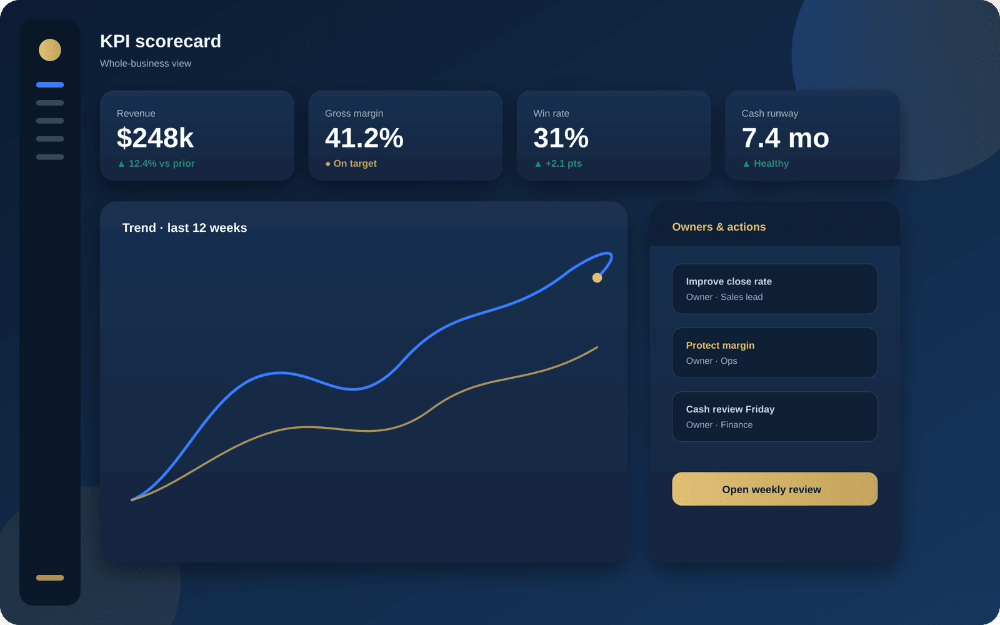

Definitions drift
Teams disagree on what a lead, a sale or a margin means, so no report is trusted.
DataDashOS
DataDashOS defines the KPIs your business should run on, tracks them, helps you hit them, and adapts them as you grow.
Hard work without a scorecard is just a hamster wheel.

The big idea
Before you hire, spend on marketing or buy another tool, decide what winning looks like. KPIs turn vision into targets, targets into weekly actions, and actions into results.

Join the waitlist and be among the first to run your business KPI-first.